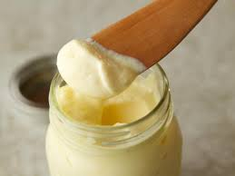

Mayo

Forget shop-bought and make your own homemade mayonnaise. It takes a little effort but it's well worth it to accompany your favourite dishes
Ingredients
- 2 egg yolks
- 1 tbsp Dijon mustard
- 250ml sunflower oil
- 2 tsp white wine vinegar or lemon juice
- 1 teaspoon minced garlic (optional)
Directions
- Tip the egg yolks and mustard into a bowl, season with salt and pepper and whisk together until completely combined. Whisking constantly, add a small drop of oil and whisk until completely combined, then add another drop and continue a drop at a time until the yolks and oil combine and start to thicken. Once you’re confident the oil and eggs are coming together you can add the oil a bit more at a time, but be patient, as adding the oil too quickly will cause the mayonnaise to split and curdle.
- Once all the oil has been whisked into the eggs and you have a thick, spoonable mayonnaise, whisk in the vinegar or lemon juice and season to taste. Will keep in the fridge for two days.